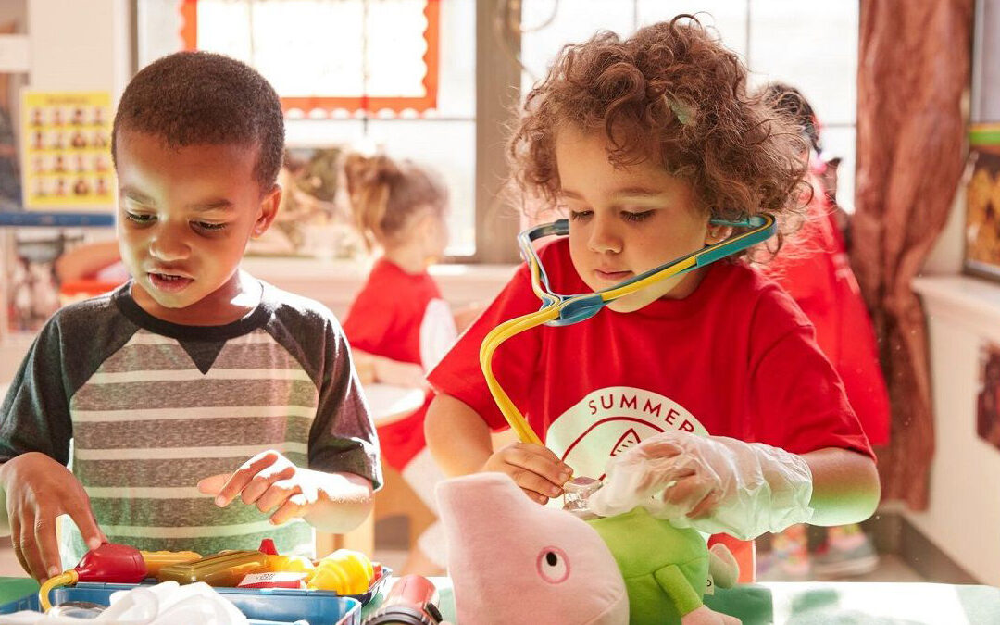
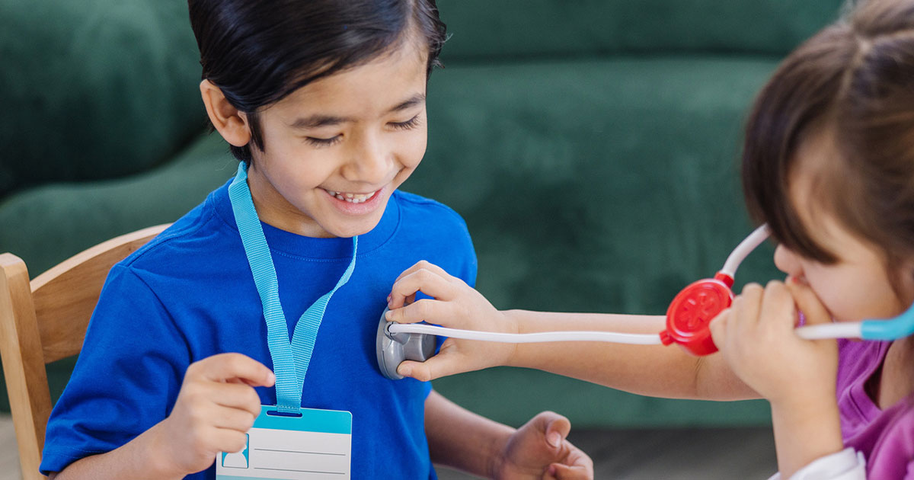
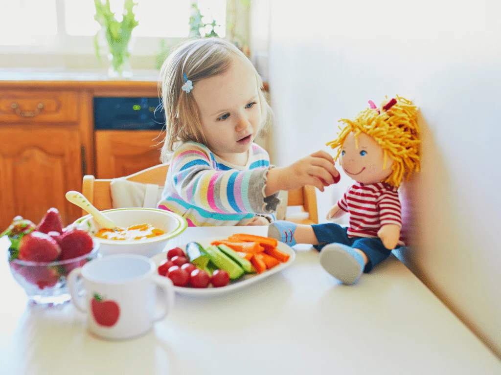
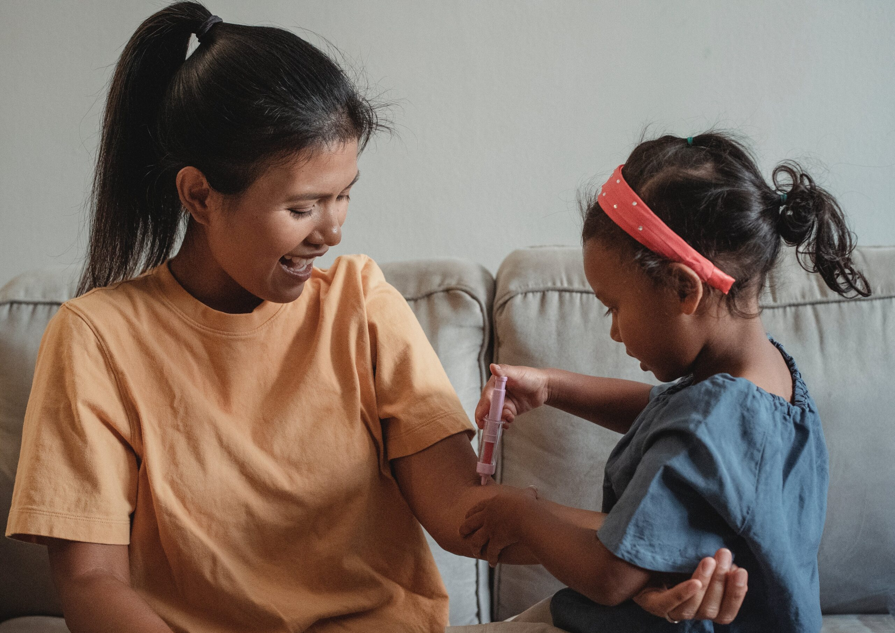

Project Overview
A modular pretend playset for children ages 3–5 that encourages imagination, storytelling, and development. The design is flexible, transforming into different settings to support open-ended play, and focuses on inclusivity, safety (following ASTM standards), and gender neutrality.
Key Features
The playset is built on foundational principles that prioritize flexibility, accessibility, and child-centered design.

Modular & Ergonomic Design
Transformable components adapt to different play scenarios.

Accessible & Inclusive
Designed for all children regardless of physical or sensory needs.

Imaginative & Roleplay
Open-ended structure encourages storytelling and creativity.

Holistic Development
Fosters social, cognitive, and emotional growth.

Research Highlights
Evidence-based foundations demonstrating the critical importance of pretend play in early childhood.

Essential for Development
Pretend play is essential for creativity, language, problem-solving, and social skills.

Social Skill Development
Through pretend play, children learn to negotiate, cooperate, and resolve conflicts with peers.


Theoretical Framework
Key theories grounding the playset design.
Piaget & Vygotsky
Play is essential for cognitive and social development. Piaget shows how children progress from symbolic representation, while Vygotsky emphasizes the "zone of proximal development" where peers and adults help children perform beyond their current abilities.
Harris's Four Elements
Four cognitive elements: symbolic substitution, causal powers, imaginary identities, and creating imaginary objects. This framework shows pretend play directly supports abstract thinking and reasoning for academic success.
Goffman's Frame
Children navigate multiple layers of meaning—understanding one object can be both literally and figuratively something else. This "double awareness" requires cognitive flexibility, supported by the playset's abstract components.

Developmental Stages
How pretend play evolves as children grow and develop.
Age 2
Toddlers engage in early symbolic substitution—using a cup as a telephone or a block as food. Play is often self-centered and parallel rather than cooperative. The modular components support simple object substitution and help develop fine motor skills through handling and manipulating props.
Age 3
Children develop sociodramatic play with explicit roles—taking on characters like "mom" or "doctor." Cooperation emerges as children negotiate roles and share narrative responsibility. The playset's open-ended structure encourages role assignment, dialogue development, and collaborative scenario building with peers.
Layering
Pre-kindergarteners layer multiple meanings—objects and characters can shift roles within a single play session. A "phone" becomes a "radio" becomes a "scanner." This metacognitive play demonstrates sophisticated symbolic flexibility and is directly linked to later reading comprehension and abstract thinking abilities.

Influencing Factors
What affects the quality and frequency of pretend play.
Parent Involvement: Structured adult involvement is crucial for enhancing pretend play outcomes.
Environment: Realistic props facilitate engagement, though novelty may initially enhance but lead to boredom over time.
Gender: Studies show girls are perceived to engage in more pretend play, though actual engagement levels are similar across genders.
Design Considerations
Every design decision prioritizes child safety, inclusivity, and developmental appropriateness.

ASTM Safety Standards
The playset adheres to ASTM F963 safety standards for toy safety, ensuring age-appropriate design, small part avoidance, and material non-toxicity. All components undergo rigorous testing for choking hazards, sharp edges, and chemical safety to meet federal safety requirements for children's products.
Inclusive Design
Designed with wheelchair-accessible heights and reach ranges, ensuring children with mobility differences can participate fully. The playset uses gender-neutral colors and open-ended scenarios that avoid prescriptive roles, allowing all children to engage without gender stereotypes limiting their play possibilities.
Safe Materials
Constructed from natural birch plywood finished with non-toxic sealants, food-grade silicone components for flexible elements, and BPA-free ABS plastic for structural connectors. All materials are sustainably sourced and free from phthalates, lead, and other harmful chemicals commonly found in children's toys.
Adult Role in Play
How adults can support meaningful play experiences.
Supportive Partners
Adults serve as active play partners rather than passive observers. When adults join in pretend play—when invited—they model language, social negotiation, and creative thinking. Their presence provides emotional security that allows children to take risks in their imagination and explore new scenarios.
Structured Involvement
Research shows structured adult involvement significantly enhances play outcomes. Adults can introduce new vocabulary, pose open-ended questions ("What happens next?"), add complexity to scenarios, and scaffold narrative development. This guided participation extends the cognitive and language benefits of pretend play.
Facilitation
Adults help establish and maintain "play frames"—the contextual boundaries that define what's "real" versus "pretend" in a scenario. Adults can introduce props, set the scene with initial dialogue, and gently redirect when play stalls, helping children sustain imaginative scenarios longer and develop more sophisticated narratives.

Environmental Design
How the physical environment affects play quality.
Age-Appropriate
The playset supports developmental progression starting from age 2+, adapting as children's cognitive and motor skills develop. Components scale in complexity from simple object substitution in toddlers to complex role-play scenarios for pre-kindergarteners, ensuring continued engagement across developmental stages.
Realistic Props
Realistic props—such as child-sized kitchenware, fabrics, and natural materials—facilitate deeper engagement and more sophisticated scenario development. Research shows that props resembling real objects support better transfer of learning from play to actual contexts compared to highly abstract or purely symbolic objects.
Novelty Balance
While new props initially enhance engagement, too much novelty leads to quick boredom. The modular design allows gradual introduction of new components—adding one new element at a time keeps play fresh without overwhelming children. This balance of familiarity and novelty sustains long-term play interest and repeated use over months and years.
Benefits
The modular playset delivers meaningful developmental outcomes for children, families, and educators.
Creativity & Thinking
Fosters creativity by allowing children to define their own play scenarios.
Language & Social Skills
Enhances language and social skills through cooperative storytelling.
Emotional Expression
Provides emotional expression and regulation opportunities.
Cultural Adaptability
Adapts to various cultural and family contexts.
Cognitive Benefits
How pretend play supports mental development.
Symbolic Play
Supports cognitive growth through symbolic play, linked to later language skills.
Perspective-Taking
Role-playing improves perspective-taking and reduces egocentricity.
Problem-Solving
Combinational flexibility enhances problem-solving abilities.
Designing for Every Child
This modular pretend playset represents a thoughtful approach to early childhood design—one that honors children's imagination, supports diverse needs, and creates inclusive spaces where all children can grow, imagine, and play together.
Back to Top ↑